运放是什么？
这是模拟电子技术的高频词汇之一。电路图中它被抽象成下面的电路符号：

有的电路图中的运放只显示左边的两个和右边的一个引脚，这是因为上下两个电源引脚被隐藏了，主要还是出于简化电路图的考虑。
说到运放的电源，就不得不提运放的两种供电方式，一种叫单电源，一种叫双电源。
单电源就是给运放的两个供电端一端接正电压，一端接地，如下图所示：

双电源就是给运放的两个供电端一端接正电压，一端接负电压，如下图所示：
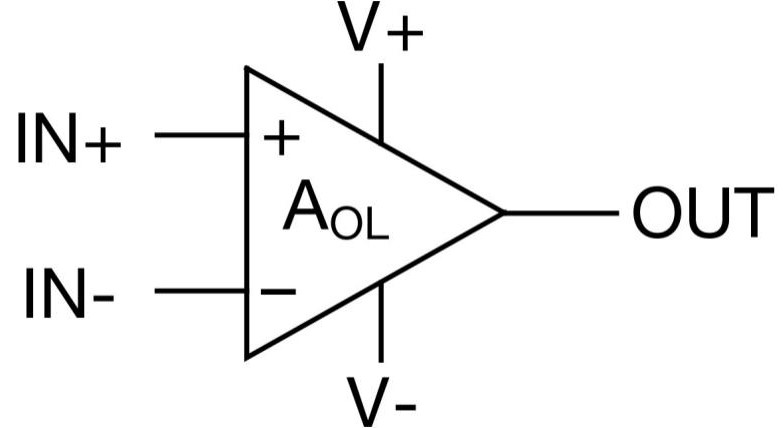
有的运放支持单电源供电，有的则只支持双电源供电，要放大交流信号时必须使用双电源供电，使用单电源供电放大交流信号时，负半周的交流信号将无法得到放大。
别看运放的电路符号只是个简单的三角形，它的内部构造可不简单，运放的内部由一定数量的半导体元件和基本元件构成，具体构造相对复杂，下面是一个运放的内部构造：
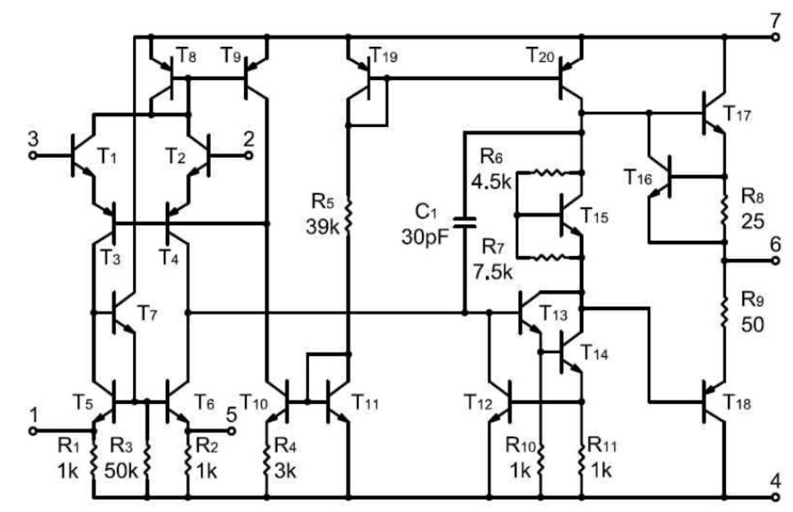
回到运放的含义，运放的全称是运算放大器，顾名思义，运放的主要功能是运算和放大。运放主要被用于处理模拟信号，包含运放的芯片一般为模拟IC。在电子技术发展早期，数字技术还不像现在这样成熟，用于处理模拟信号的运算放大器承包了绝大多数的计算任务，现在运放已经不再作为运算的主力，但运算的名号依然被保留了下来。运放除了可以进行模拟信号之间的运算外，也可以像三极管、MOS管一样将小信号放大。当然，运算和放大只是运放最基本的两个功能，碍于篇幅，本文只重点介绍这两种功能。
为了减少部分读者的困惑，在介绍功能前还需要普及一下运放最重要的两个特征：虚断和虚短。
虚断和虚短
虚断相对比较容易理解，因为运放的输入阻抗很大，几乎没有电流可以流入运放的输入端，所以我们可以把运放的两个输入端近似看作断路。
虚短的意思是运放的同相输入端和反相输入端近似短路，但虚短需要在特定条件下才会达成，主要是两种条件下：开环状态下的线性区和深度负反馈状态。
开环状态下的线性区
首先讨论下什么叫做开环状态下的线性区，要理解这点首先要知道开环状态下运放输出和输入之间的关系，如下图所示：
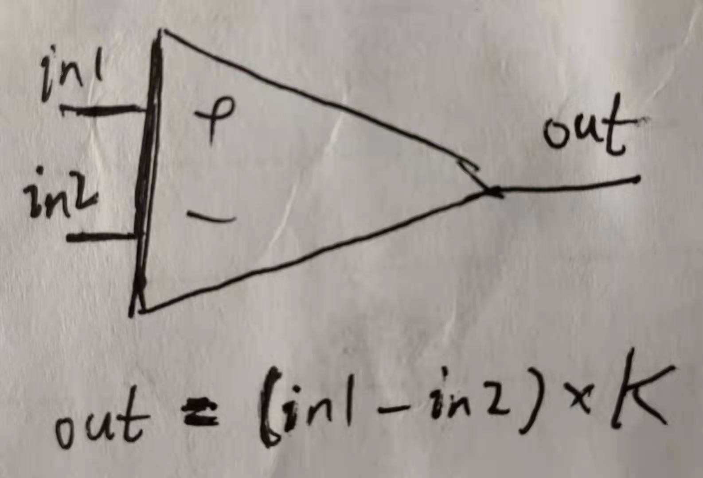
解释一下这张图，in1是输入同相输入端的信号，in2是输入反相输入端的信号，开环状态下没有负反馈，这时运放的输出本应是（同相输入端的信号-反相输入端的信号）×开环增益K，开环增益是运放的一个指标，是个非常大的常数，通常能够上万，但这只是理想状态，实际上运放的开环输出会受到电源电压的限制，高于正供电电压时输出会被限制在正供电电压，低于负供电电压（或0电压）时输出会被限制在负供电电压（或0电压），于是开环状态的输入输出关系可以用下面的函数图像表示：
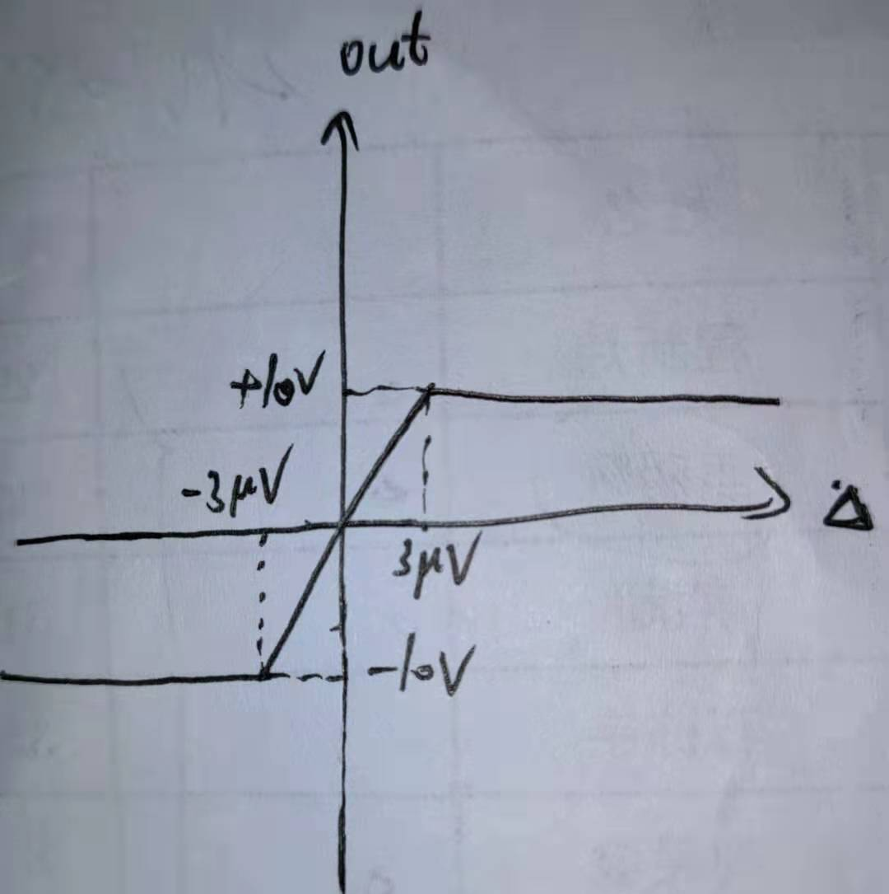
横轴的三角表示输入端信号的差值，纵轴表示开环状态的输出，图中的-3uv到3uv这个范围就是上文提到的开环状态下的线性区，这个范围内运放的输出还未达到供电电压，所以输出和输入差值之间的关系是线性的，又因为开环增益K很大，所以这个范围内的输入信号差很小，只能在几微伏左右，两个输入端也就能近似看作短路。
深度负反馈状态
在了解完运放的开环增益后，我们会发现这样的放大虽然可以轻松获得输入的高增益，但缺点也十分明显：输出很容易触及到电源电压，从而造成信号的失真。有没有什么办法解决这个问题呢？负反馈可以有效解决这个问题，简单来说，负反馈就是将输出信号通过反馈组件反馈回输入，从而使放大器的总增益减小，就像下面这样（带标号图皆取自《电子设计从零开始》，下同）：
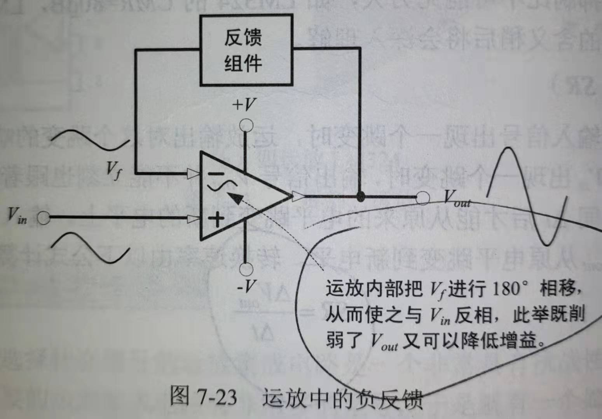
可能有人会说负反馈会削弱放大器的放大效果，但负反馈带来的好处比这点损失要多得多：
1.提高总增益的稳定性
2.减少输出型号的失真
3.增加带宽（可让放大器适应更大频率范围的放大）
4.改变输入和输出阻抗
当有了反馈组件后，运放和外围器件共同构成了闭环系统，这个闭环系统的增益称为闭环增益。
放大和运算
只要理解了运放的虚短和虚断，我们便可以推导出放大电路和运算电路的所有相关公式，公式的推导需要结合图像进行具体分析，接下来分两部分讲解。
放大电路
本文主要介绍同相放大电路和反相放大电路。同相放大电路如下图所示：
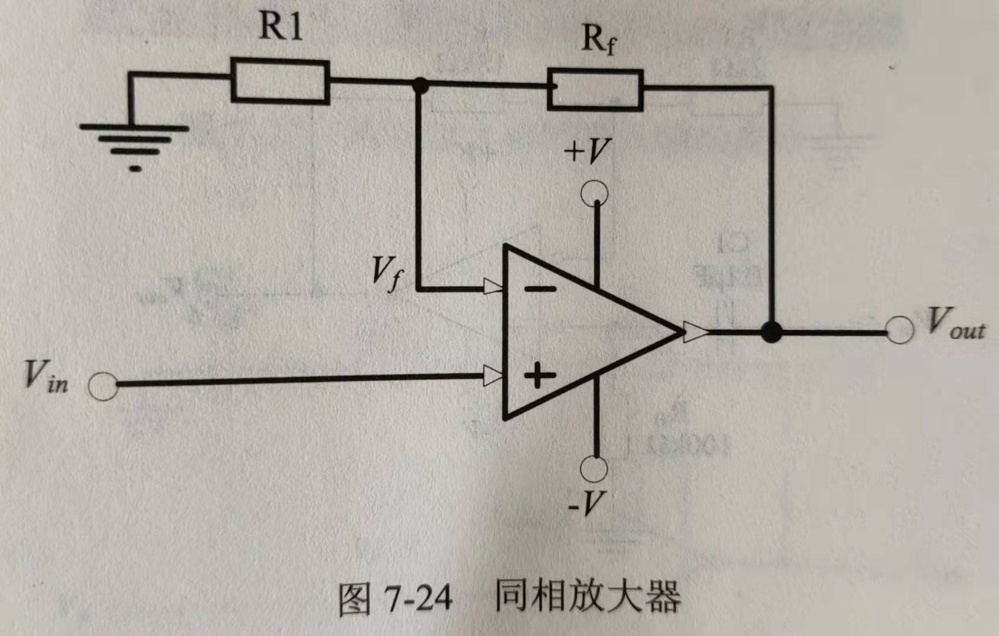
我们运用上文的知识对它的闭环增益进行推导，推导过程如下：
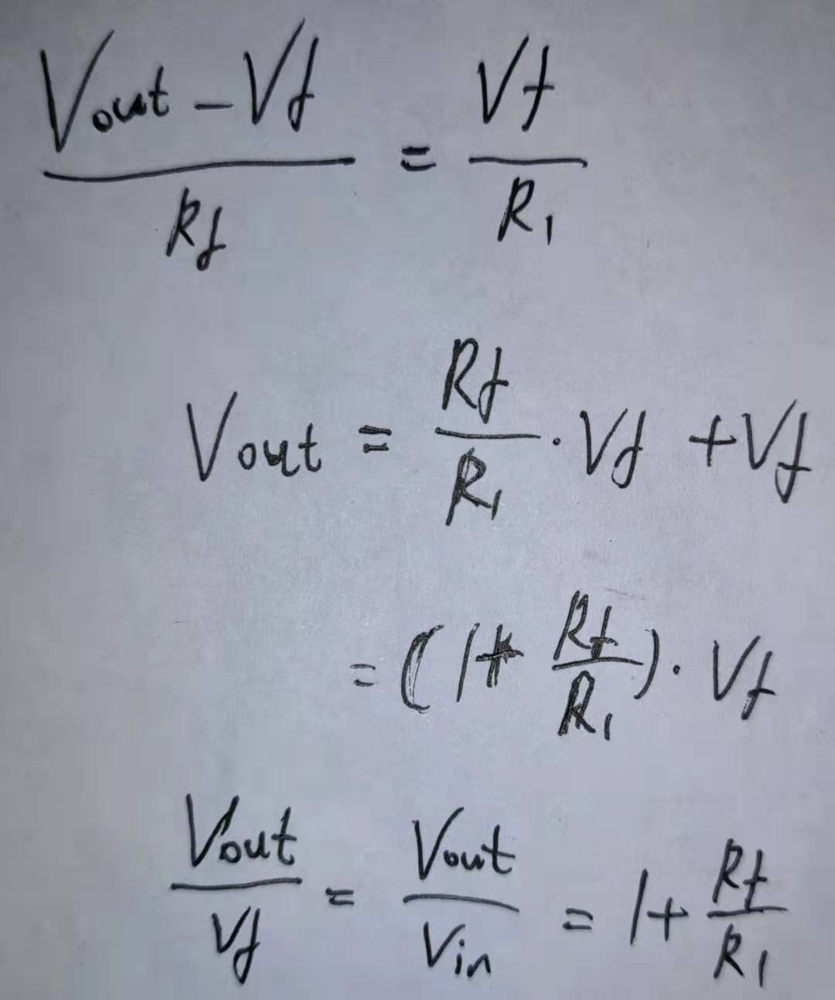
虚断使反馈的电流不经过运放直接流入地，所以流过R1和Rf的电流是一样的，这又是负反馈状态，所以虚短使得Vf和Vin相等，进而可以推出同相放大器的电压增益。如果使用同相放大器对交流信号进行放大，需要为输入信号提供一个到地的回路，如下图所示：
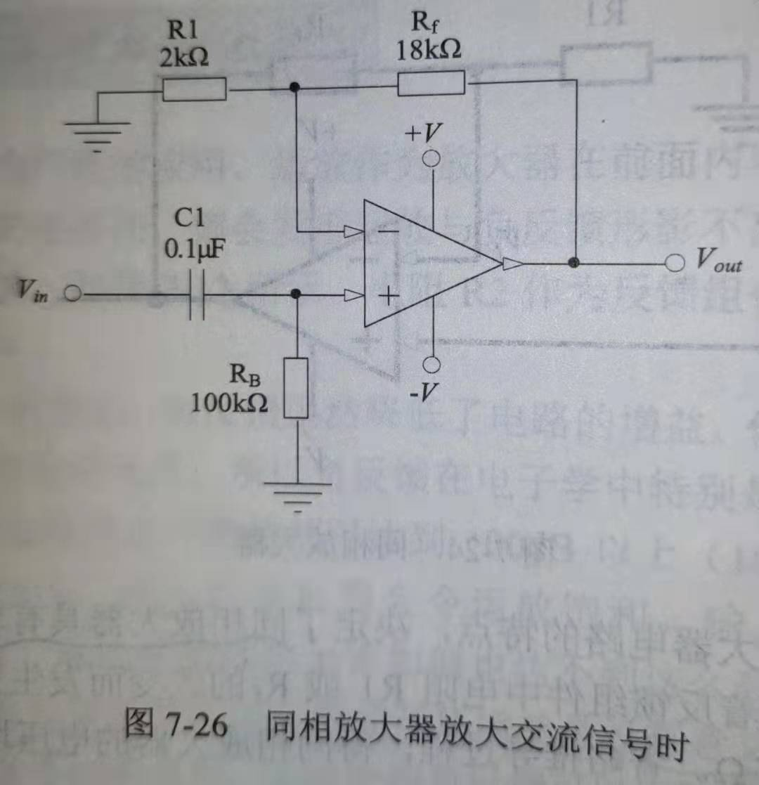
反相放大电路如下图所示：
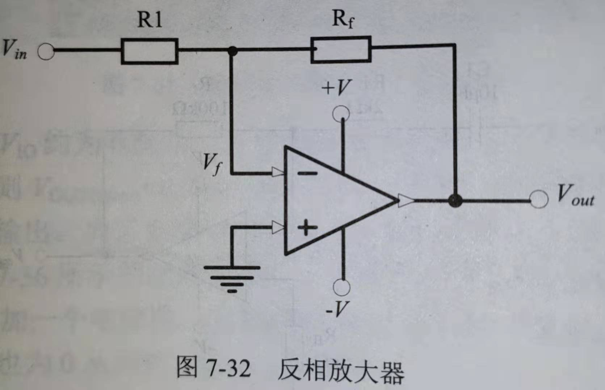
我们运用上文的知识对它的闭环增益进行推导，推导过程如下：
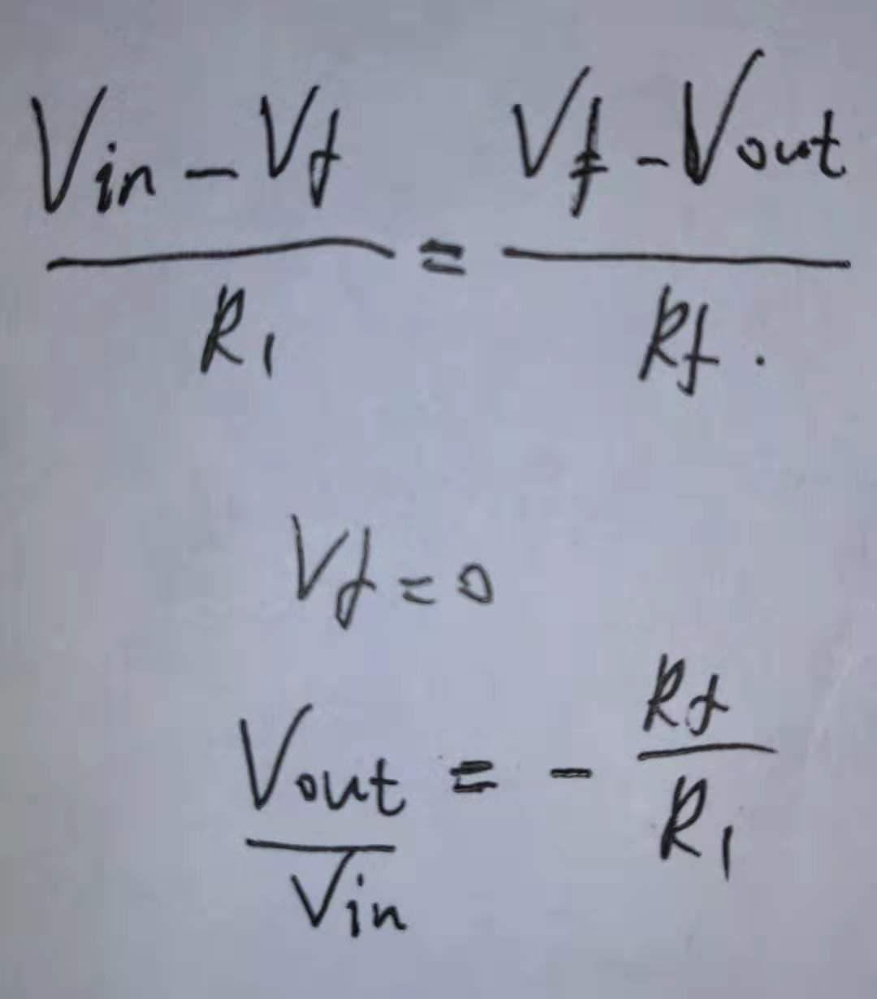
具体过程大同小异，此处不再赘述。
需要提醒的是，实际应用中同相输入端通过一个电阻接地，该阻值一般为R1和Rf的并联总阻值，目的是减小反相放大器的偏移电压。
运算电路
运算电路只提供一个加法放大器的例子供参考，加法放大器如下图所示：
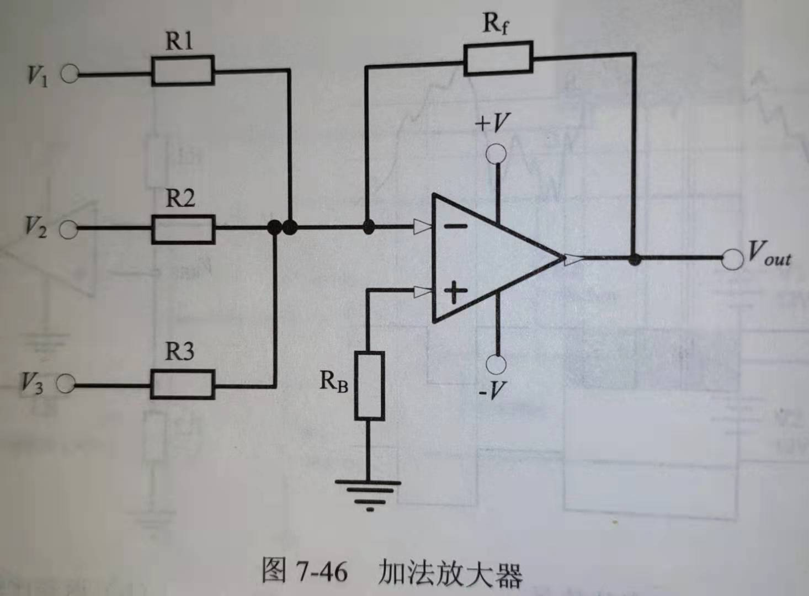
输入输出关系如下图所示：
具体的公式推导过程在此省略，结合虚短虚断，推导并不复杂。
最后，再介绍几个运放的关键参数，关于运放的介绍就告一段落了：
1.电源电压范围（Vcc）：运放能承受的最大供电电压
2.共模输入信号范围（Vicm）：输入运放输入端信号的电压限制
3.共模抑制比（CMR）：运放抑制共模信号的能力，越大越好
4.转换速率（SR）：运放输出对输入信号跳变的响应速度，可通过以下公式计算：
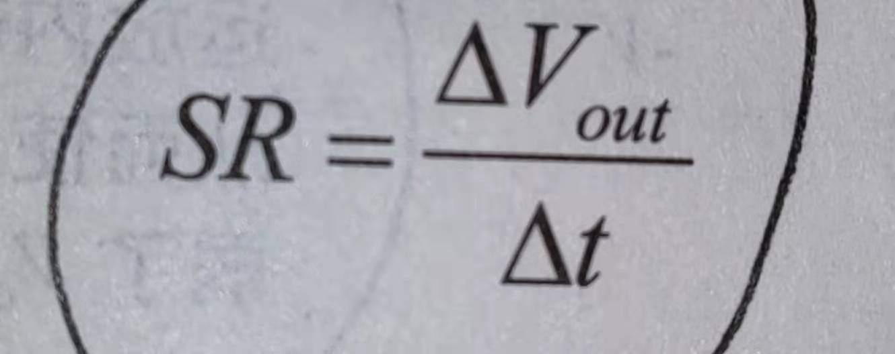
声明：本文引用了《电子设计从零开始》和B站UP主寒武纪魔道电子的部分内容，若涉及侵权，本人将第一时间进行删改。